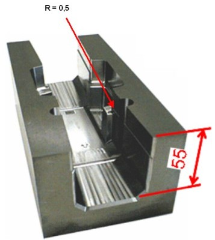

|
Gövde
tasarýmý yapýlýrken aðýrlýðýn ve üretim masraflarýnýn azaltýlmasý
ve yüksek eksen hýzlarýnda çalýþma özelliði hedeflenir. Tezgah
döküm gövdesi mekanik kuvvetlerden doðan deformasyonlarý azaltmak
için takviyeler, kalýn ve ince kesitler, bölmeler, sinirler,
delikler ihtiva eder. Bu yapý tarzý hem tezgahtan doðan hem
de çevre sýcaklýðýndan ileri gelen ýsýl deformasyonlarýn kontrol
altýna alýnmasýný çok zorlaþtýrýr. Tezgahta bir bölgenin daha
sýcak (örneðin elektrik panosu tarafý), baþka bir bölgenin
daha soðuk kalmasý genleþme hesaplarýný alt üst eder. Örneðin
bir dik iþleme merkezinde düþey kolonun iþ mili tarafý daha
çok ýsýnýr ve kolonun arka tarafý atmosferle temas ettiðinden
pek o kadar ýsýnmaz.
Isýnan
ön taraf uzayarak iþ mili ekseninin düþey konumdan ayrýlmasýna
ve alt ucunun operatör tarafýna yaklaþmasýna yol açar. Yani
iþ milinin düþey konumdan saptýðý görülür. Ýþ milinin alt ucuna
baðlý takým da teorik konumdan farklý bir konuma gelerek oradan
talaþ kaldýrýr.
Otomotiv
sac kalýplarý gibi büyük ebatlý kalýplar çift kolonlu iþleme
merkezlerinde üretilmektedir. Bu kalýplarýn aðýrlýðý 35 ton
civarýndadýr. Tezgah, kalýp aðýrlýðýndan, hareket sýrasýnda
doðan ivme kuvvetlerinden ve boylarý oldukça uzun (birkaç
metre) tezgah elemanlarýnda ýsýl genleþmelerden doðan deformasyonlarla
baþa çýkmak ve bitmiþ kalýp ölçülerinin birkaç mikron hassasiyetle
CAD resmine uygun olmasýný saðlamak zorundadýr; ve modern
tezgahlar bu gereksinimleri tatmin edebilmektedirler.
Tezgah
elemanlarýnda ýsý kalkanlarý, bazý bölgelerde kullanýlan soðutma
fanlarý ve nihayet makine elemanlarýnýn simetrik yapýlmasý,
ýsýl uzamalarýn tezgah yazýlýmý tarafýndan kontrol altýnda
tutulmasý, bugün kullanýlan belli baþlý çarelerdendir.
Isýl
tesirlerin kompansasyonu (telafisi) modern tezgahlarýn klimalý
odalara ihtiyaç hasýl olmadan, en hassas ve sofistike (dolayýsýyla
deðerli) parçalarýn ve kalýplarýn imal edilmesine olanak tanýmaktadýr.
Soðutma suyunun sýcaklýðýnýn kontrolü (Thermo regulation) kullanýlmasý
durumunda 3 ila 4 mikron mertebesinde ölçü sapmalarýna Türkiye'de
klimasýz fabrika ortamýnda eriþilmiþtir.
2.3.
Kontrol elektroniði cephesindeki geliþmeler
Bilgisayar
teknolojisi meþhur Moore kanununa uyarak geliþmeye devam ediyor.
(Entegre devrelerde santimetrekareye düþen transistor sayýsý
her onsekiz ayda ikiye katlanýyor - Gordon Moore_Intel_ 1965)
Tezgah
bilgisayarý üreticileri donanýmla ilgili geliþmeleri yakýndan
takip ediyorlar ve elde edilen faydayý derhal müþterilerine
aktarabiliyorlar. Daha yüksek torklu, daha yüksek güçlü motorlar
ve sürücüler, yukarýda bahsedilen enkoderler, ham ve iþlenmiþ
parçayý ölçen donanýmlar, CAM yazýlýmlarýný iþleyen kartlar,
tezgahta hareketli aksamýn, takýmlarýn birbirine veya iþ parçasýna
çarpmasýný önleyen fonksiyonlar, Robot uygulamalarý... Bunlar
için gereken çok sayýda mikroprosesörün (iþlemcinin) birlikte
ve uyum içerisinde çalýþmasý, Modern tezgah bilgisayarlarýnýn
üstünlüðünü ortaya çýkarýyor.
2.4.
Yazýlým
Yazýlým
da kendi içinde iki büyük gruba ayrýlmaktadýr. Birincisi tezgah
bilgisayarý yazýlýmýdýr. Modern yazýlýmlar modüler olarak
hazýrlanmakta, basit tornalardan 9 eksenli iþleme merkezlerine
kadar her çeþit tezgaha uygun özelliklerde düzenlenebilmektedir.
Yazýlým, tezgahýn ve çevre birimlerinin (robotlar, konveyörler,
çubuk besleme sistemleri, palet konveyörleri ve raflarý, takým
ölçme makineleri, iþ parçasý ölçme makineleri, diðerleri) tamamýný
kontrol altýnda tutar ve onlarýn önceden tasarlanan program
dahilinde ve ahenk içinde çalýþmalarýný saðlar, kontrol eder,
gerekirse düzeltir.
Kalýpçý
tezgahlarýnda kullanýlan bazý yazýlýmlar (örneðin Nurbs yazýlýmlarý)
CAD programýnýn ürettiði Nümerik Kontrol (NC) datasýný analiz
ederek kalp yüzeyini iþleyen fonksiyonlarý kendisi üretir
ve tezgah iþ miline uygulattýrýr.
Genelde
kalýp yüzeyleri spline eðrilerinden ibarettir. Spline'lar,
NC datasý olan küçük boylu doðrusal çizgilerin enterpolasyonundan
elde edilir. Doðrusal çizgilerin kalýp üzerine iþlenmesi için
tezgahýn köþelere yaklaþýrken yavaþlamasý ve köþeyi geçtikten
sonra hýzlanmasý gerekir. Bu yapýlmayýp tezgah hareketinin
hýzý sabit tutulursa kalýp iþleme süresi çok uzar, yani maliyeti
artar. Bunu yanýnda kalýbýn hassas olmasý isteniyorsa doðrusal
çizgilerin boyu daha kýsa yapýlmalýdýr ki bu defa da NC datasý
çok büyür.
Nurbs
yazýlýmý CAM tarafýndan üretilen küçük lineer hareket çizgilerinin
enterpolasyon komutlarýný otomatik olarak Nurbs eðrilerine
(Nurbs splines) tahvil eder, köþelerde ivmelenmeyi ve yavaþlamayý
saðlar ve böylece kýsa zamanda yüksek kaliteli kalýp iþlenmesini
mümkün kýlar.
Nurbs
yazýlýmý ayrýca tezgah özelliklerini, kalýbýn þeklini, iþleme
þartlarýný, takým özelliklerini ve buna benzer özel þartlarý
da hesaba katarak optimum ilerleme deðerleriyle ivme deðerlerini,
kalýbý istenilen hassasiyette ve kýsa zamanda bitirecek þekilde
ayarlar. Bu fonksiyona adaptif biçim kontrolü denilmektedir.
Yazýlýmýn
ikinci büyük grubu CAD/CAM yazýlýmlarýdýr. Bunlar kalýpçýlýðýn
vazgeçilmez öðeleridir. Bu yazýlýmlar da modüller halinde
tasarlanýr, üretilir ve satýlýr, zaman içerisinde yeni versiyonlarý
ortaya çýkar. Yazýlým firmalarý ürünlerinin bakýmýndan ve
güncellenmesinden sorumludur.
CNC
kalýp tezgahlarýnda kullanýlan çok sayýda kalýp yazýlýmý mevcuttur.
Bir kalýp yazýlýmý (CAD/CAM) satýn alýnmadan önce ihtiyaçlar
doðru tespit edilmeli, satýcýdan demo istenmeli, yazýlýmýn
ileride firmada ortaya çýkacak geliþmelere ve ihtiyaçlara
cevap verecek þekilde modüler olmasýna dikkat edilmelidir.
Bazý CAD/CAM satýcýlarý Post Prosesör yazýlýmlarý için bir
servet isteyebilmektedirler fakat bir çok CAD/CAM yazýlýmý
Post Prosesörü kilitli olarak içinde barýndýrýr.
2.5.
Ýlerleme hatasý telafisi
Bir
kalýbý yüksek iþleme hýzlarýyla iþlerken kesme yüzeyinde oluþan
kesme kuvvetleri sürekli deðiþir. Bunun yanýnda kýzak yüzeylerindeki
kayma direnci de kendi kurallarýna göre deðiþim gösterir.
Kesme
yüzeyinde oluþan kesme kuvvetleri kesici ucun (insertin) metal
ile temas noktasýnýn konumuna, mevzii metalürjik yapýya ve
kesme derinliðine baðlýdýr.
Kesici
takýmýn eksen hareketleri sýrasýnda yön deðiþtirmesi (güneyden
kuzeye doðru giderken batýdan doðuya harekete baþlamasý) da
yüzey kalitesini etkiler.
Takým
uzunluðu, takým defleksiyonu (eðilmesi) derin kalýplarda kesme
noktasý konumunun deðiþmesine sebep olur.
Eksen
hareketinin hýzlanmasý ve yavaþlamasý (köþelere yaklaþýrken
eksen hýzý azalýr, köþeyi geçtikten sonra hýzlanýr) kesme
kuvvetlerini ve takým defleksiyonunu etkiler.
Bu
mahzurlarýn kalýp yüzeyi üzerindeki negatif tesirlerini azaltmak
için;
a)
defleksiyon kontrolü ve telafisi (deflection compensation
control),
b) hareket yönü deðiþmesi telafisi (arc quadrant projection
compensation),
uygulanýr.
a)
Defleksiyon kontrolü ve telafisi
Eksen
hareketi basit olarak gidip geri dönme tarzýnda ise, mekanik
defleksiyon (þekil deðiþtirme) sebebiyle kesme derinliðinin
deðiþmesi olaðandýr. Bunun sebebi eksen ileriye doðru hareket
ederken bilyeli vida boyunun deðiþmesi (genleþme veya büzülme)
ve geri dönüþ sýrasýnda bunun tersinin doðmasýdýr.
Metalik
malzemeler Hooke kanunu uyarýnca, bir basma veya çekme yüküne
maruz kaldýklarýnda þekil deðiþikliðine uðrarlar. Þekil
deðiþikliðinin mertebesi basit bir formülle hesaplanabilir.
Defleksiyon
kontrolü ve telafisi, mekanik þekil deðiþtirmenin vuku bulduðu
her noktada, servo motorlar yardýmýyla uygulanýr. Bu fonksiyonun
uygulandýðý büyük kalýp üretim tezgahlarýnda hýzlanma ve
yavaþlama sýrasýndaki pozisyon (konum) hatalarý normal deðerlerin
1/4 üne düþürülmüþtür.
b)
Hareket yönü deðiþmesi telafisi (HYDT)
Eksen
hareketleri ve takým yolunun yay eðrileri þeklinde olduðu
hallerde kýzaklardaki deðiþken kayma sürtünmesi sebebiyle
eksen motorlarýnýn torku ancak gecikerek bu sürtünmeleri
yenebilir. HYDT, takým yolu yay þeklinde ise eksen hareket
motoru torkunu ideal sýnýrlar arasýnda tutar.
HYDT
küçük kalýp iþleme merkezlerinde uygulanmaktadýr. Bu sayede
yay eðrileri þeklindeki takým yollarýnda yüksek kalýp iþleme
hýzlarýna raðmen yüzey hatalarý 2 ila 1 mikrona ve hatta
daha aþaðýsýna düþürülebilmiþtir. Ayrýca kalýp yüzeyindeki
çizikler de gözden kaybolmuþtur.
2.6.
Derin Kalýplar / Uzun Takýmlar
Derin
kalýplarda kullanýlmasý mecburi olan Boy / çap oraný büyük
olan kesici takýmlarýn rijitliði düþük olduðundan defleksiyon
sebebiyle titreþimlere ve yüzey kalitesinin bozulmasýna sebep
olurlar. Kalýp boþluklarýnýn dip tarafýnda bulunan sinir ve
takviye oyuklarý zorlukla iþlenir veya dalma erozyonla yapýlýr
ancak bu durumda kalýp üretim süresi uzadýðý gibi kalýp iki
baðlamada yapýldýðýndan ölçü hatalarý ortaya çýkar.
|

|
Þekil-2
DERÝN PARÇALARIN ÝÞLENMESÝ
Tezgah: Yatay Ýþleme Merkezi
Malzeme: DAC 10
Sertlik: 51 HRC
R = 0,5
Takým:
L/d = 17,5
Kaynak: OKUMA Corp., Japonya
|
Bugün
çok az sayýda kalýp iþleme tezgahý "Super L/D iþleme
tekniði" adý ile anýlan bir özeliðe sahiptir. Bu teknikte
takým yollarý, kesme kuvvetlerini minimuma indirecek tarzda
hesaplanýr; köþeler adým adým çok kademede iþlenir; köþelerin
finiþ iþlemi kontur iþleme metodu ile bitirilir.
Bunun
yanýnda kesici takým ve insert rijitliðini arttýrmak için
bilinen metotlar uygulanýr.
Derin
kalýplarý iþlemek için kullanýlan takýmlarda boy / çap oraný
22 ye eriþilmiþtir. Bu oran bir çok kalýbýn dalma erozyon
metodu kullanýlmadan, iþleme merkezinde ve bir baðlamada iþlendiðini
ortaya koyuyor.
|